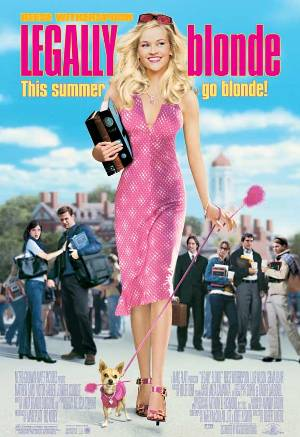
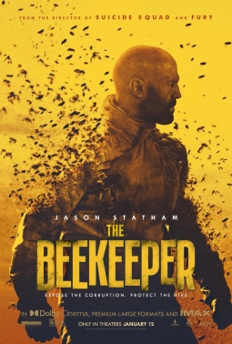
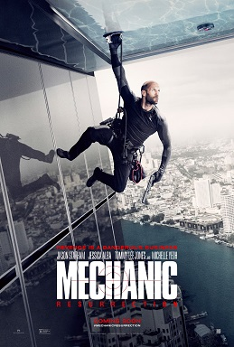
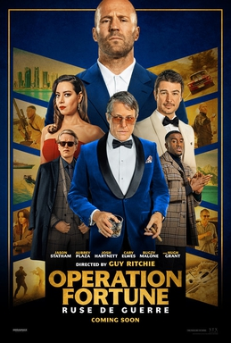
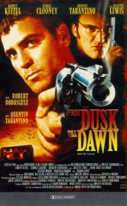

Legalmente LoiraResumo: Elle Woods é uma jovem rica e mimada que decide estudar Direito em Harvard para reconquistar o namorado. Ao longo da história, ela se surpreende com sua capacidade intelectual e conquista a confiança de seus colegas e professores.

BeekeeperResumo: Em um enredo de ação e mistério, o personagem principal, interpretado por Jason Statham, assume o papel de um ex-militar que trabalha como apicultor, mas logo é envolvido em uma trama cheia de vingança e conspirações.

Mechanic: ResurrectionResumo: Arthur Bishop (Jason Statham) é um assassino de elite, especializado em fazer parecer que as mortes de suas vítimas são acidentes. Agora, ele precisa fazer o trabalho final para salvar a mulher que ama, com um plano de ação cheio de adrenalina.

">Operation FortuneResumo: Um super-espião (Jason Statham) se junta a um time de elite para realizar uma missão secreta. Sua tarefa é evitar uma venda de armas altamente perigosas, enquanto ele enfrenta inimigos implacáveis e arriscados.

From Dusk Till DawnResumo: Dois criminosos fugidos sequestram uma família e os levam para um bar isolado. No entanto, o lugar é frequentado por vampiros sedentos por sangue, e uma luta pela sobrevivência começa.